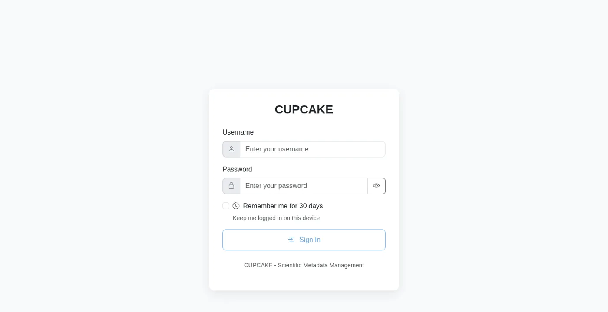
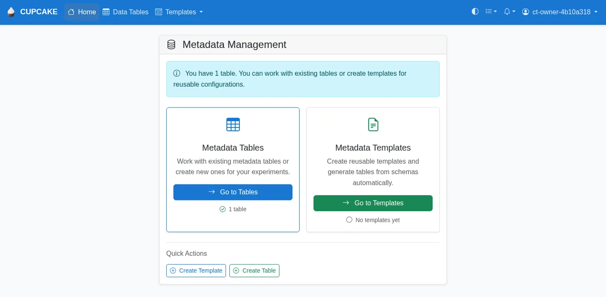

Cupcake Vanilla keeps the sample metadata of proteomics experiments in tables that follow the SDRF format, and exports them as SDRF or Excel files.
Signing in
Sign in with your username and password, or with Login with ORCID when the site allows it. Tick Keep me logged in on this device to stay signed in.

New users choose Create Account when the site allows public registration; otherwise an administrator creates the account.
Metadata Management
After signing in, Cupcake Vanilla opens on Metadata Management:
- Metadata Tables lists your tables and creates new ones; see Metadata tables.
- Metadata Templates keeps reusable column and table templates; see Templates.
- Quick Actions creates a template or a table straight away.

The navigation bar leads to the tables, templates, vocabularies, favourites and lab groups, and the account menu to your profile, device tokens and, for staff, the administration pages.